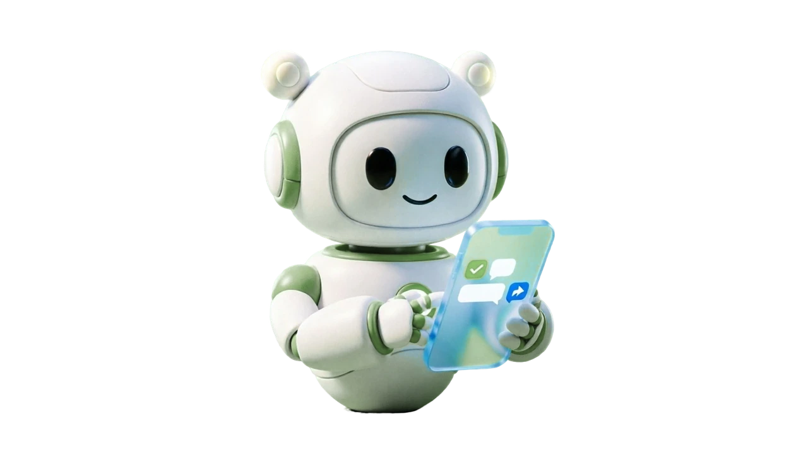
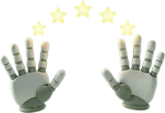

Создание и верстка сайтов
Лендинги, одностраничники, корпоративные страницы. Делаю на чистом коде или собираю на Tilda — адаптивно под любые устройства.
Услуги
Беру задачи под ключ — от идеи до результата, без лишних посредников.
Лендинги, одностраничники, корпоративные страницы. Делаю на чистом коде или собираю на Tilda — адаптивно под любые устройства.
Настройка ботов на Salebot и аналогах: приём оплат, автоответы, воронки, рассылки. Всё что нужно для продаж в Telegram и на других площадках.
Связываю сервисы между собой: AmoCRM, вебхуки, API-интеграции. Настраиваю автоматические потоки данных без ручной работы.
Баннеры, обложки, оформление соцсетей, брендинг. Создаю визуал, который работает на узнаваемость и доверие.

Процесс
Самозанятая. Работаю и с частными заказчиками, и с компаниями — по договору или без, как вам удобнее.
Напишите мне в соцсети или на почту, опишите задачу своими словами
Созваниваемся или переписываемся — уточняем детали, сроки и стоимость
Выполняю задачу в согласованные сроки, показываю промежуточный результат
Сдаю работу, вношу правки, остаюсь на связи после завершения проекта
Кейсы
Проекты
Сайты, боты, дизайн и интеграции.
Собрала всё в одном месте.
{Сей сайт написан кодом, дизайн и вёрстка — всё моими ручками}

Контакты
Опишите задачу своими словами — что происходит сейчас и какого результата ждёте. Уточню детали и предложу, как это лучше собрать. Не знаете, с чего начать — разберём, что уже есть, и составим план.
Спасибо, я свяжусь с вами в течение дня